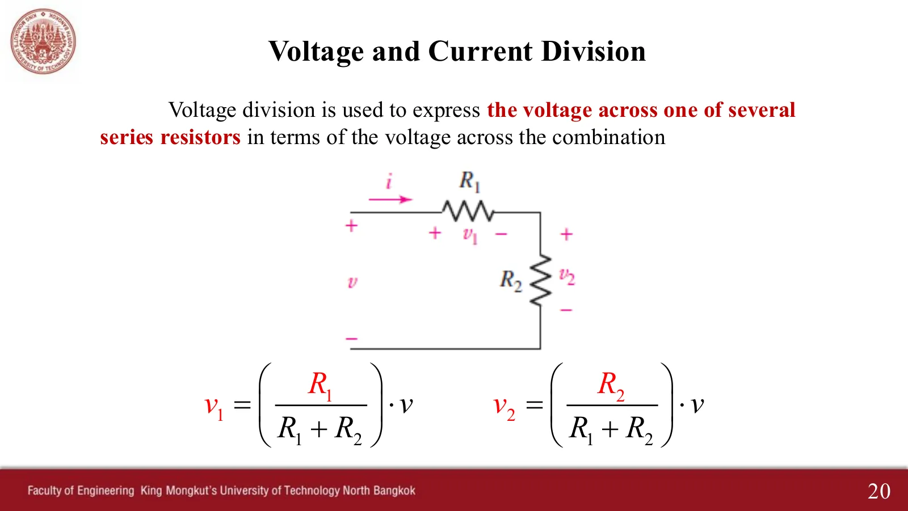
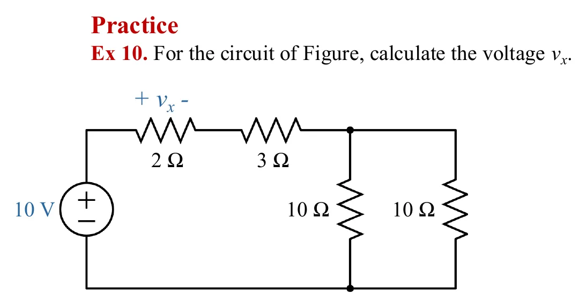
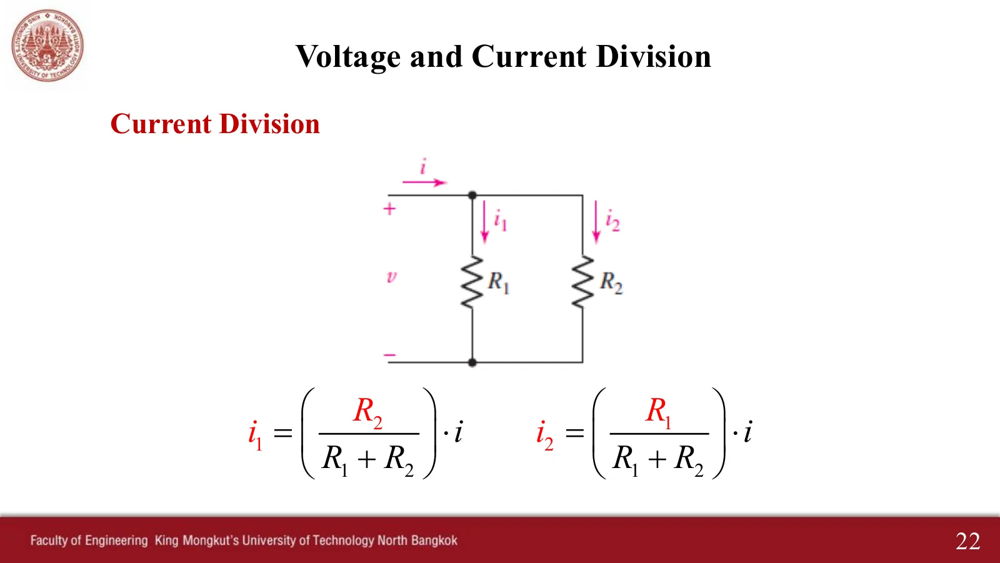
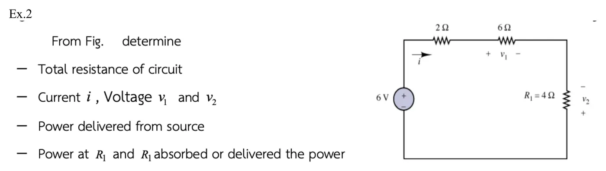
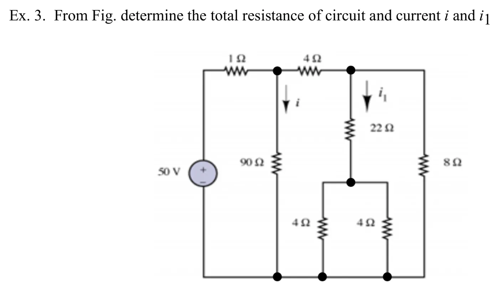
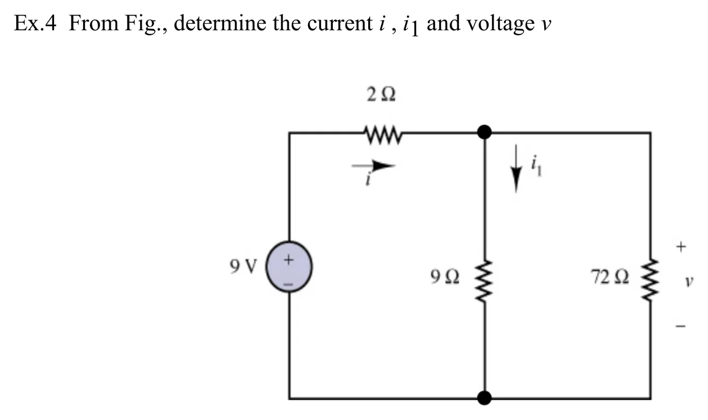
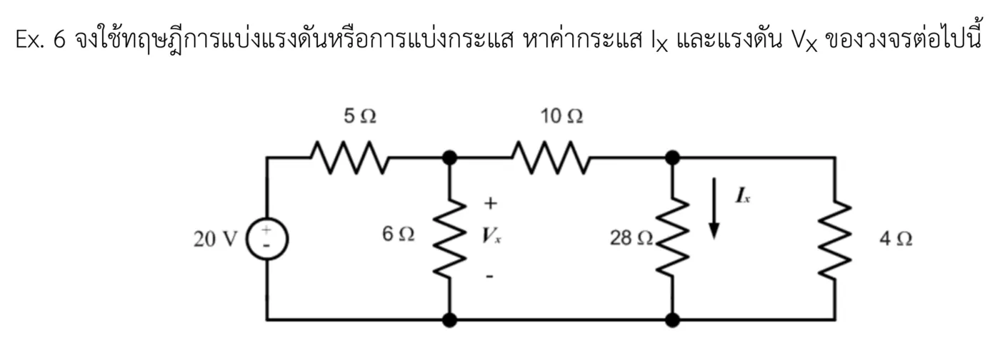

ตัวต้านทานที่อนุกรมกันมีกระแสเดียวกัน แรงดันรวมจึงแบ่งให้แต่ละตัวตามสัดส่วนของความต้านทาน (การแบ่งแรงดัน สไลด์หน้า 20) ส่วนตัวต้านทานที่ขนานกันมีแรงดันเดียวกัน กระแสรวมจึงแบ่งให้แต่ละกิ่ง โดยกิ่งที่ความต้านทานน้อยได้กระแสมาก (การแบ่งกระแส สไลด์หน้า 22) จำง่าย ๆ ว่าตัวเศษของสูตรแบ่งกระแสคือกิ่งตรงข้าม หน้านี้มีเครื่องมือสองชิ้น (A ตัวแบ่งแรงดัน B ตัวแบ่งกระแส) และ 5 โจทย์ เรียงทีละข้อ (Ex 10 กับตัวอย่างเพิ่มเติมข้อ 2, 3, 4, 6) ในภาพจำลองส่วนที่กำลังคิดในแต่ละขั้นจะเรืองแสง
Resistors in series carry the same current, so the total voltage is shared among them in proportion to their resistance (voltage division, slide p. 20). Resistors in parallel share one voltage, so the total current is split among the branches, the smaller resistance taking more (current division, slide p. 22). An easy way to remember: the numerator of the current divider is the other branch. This page has two tools (A, a voltage divider; B, a current divider) and 5 problems, one after another (Ex 10 and extra examples 2, 3, 4 and 6). In the simulations, the part being worked on in each step glows.


ข้อ 1 อยู่ในหน้า 3.1–3.2 และข้อ 5 (KVL + KCL) อยู่ในหน้า 3.2 · เฉลยลายมือของผู้สอนอยู่ในกล่องพับใต้แต่ละข้อ
Example 1 is on pages 3.1–3.2 and example 5 (KVL + KCL) is on page 3.2 · the teacher's handwritten solutions are in the folded boxes under each problem.



